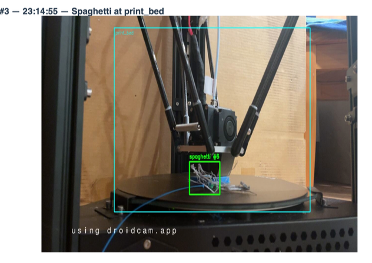
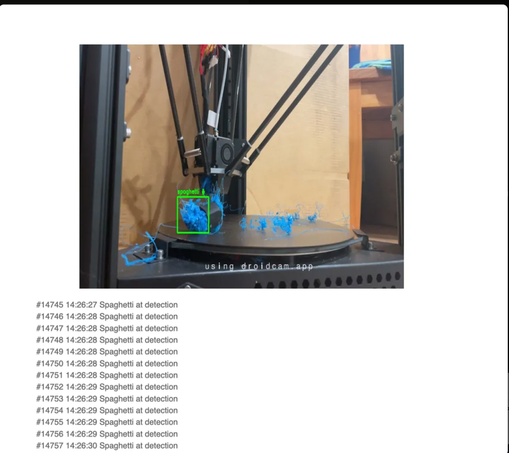
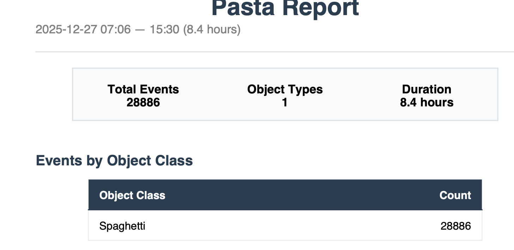

It Saw the Print Fail 28,886 Times
What it runs on
A Jetson Orin Nano 8GB on JetPack 6.2, with an old iPhone 12 mini as the camera. The phone runs DroidCam, which streams it as HTTP video over Wi-Fi. Its first job was counting cars on the road in front of my house.
PyTorch on the Jetson takes NVIDIA's own build, NumPy pinned to 1.26.4, and Ultralytics installed with --no-deps so pip doesn't swap either one out. That stack lives in a virtualenv I knew I'd forget to activate, so the request for run.sh was "call run.sh and the app just goes, even if I forget the venv."
Claude Code on the web wrote nearly all of the code, across 14 sessions between December 22 and January 21. I ran it on the Jetson, pasted the logs back, and made the calls.
One app per question
The first version answered one question. I had more for it: whether the cats were eating while I was away for two weeks, and whether a print had just failed. The code answered each new question with more flags and more filters in more places. I wanted the next question to be a config file.
Events own everything
It started with the cats. I wanted something that could run for two weeks while I was gone and email me when they went to the bowl. A few hours in, every feature had its own consumer with its own filters, and Claude was walking me through the frame-capture filters when I wrote "OH, I have a totally new way to think about this whole thing that will flip its on its head."
Rather than smearing the events all over the place, I define even schemas in the config that I want to fire events for. The whole event type, line/zonein/zoneout, class, etc... and then all consumers act based on any events then.
What happens when an event fires is part of the event, and nothing downstream filters anything. Claude got it, and I was thrilled: "YESSSS you get it, the top level event owns its whole world." I called it "composing primitives, like AWS!" and opened the next session, with Opus this time, on "I am trying to build a terraform like system." That session produced --validate, --plan and --dry-run, so a config gets checked against the loaded model, shown as a plan, and simulated before the camera ever opens.
Two more lines finished the idea. Claude noticed events declaring JSON logging while a separate section also had to switch on the JSON writer. I wanted the section gone: "All consumers are off by default unless an event brings them to life." And when the dispatcher got tangled deciding which actions imply which, I asked it to "statically figure it out up front and then run." A report with photos needs frame capture, and frame capture needs a buffer of recent frames. The plan step works that out before detection starts, or refuses to start.
An event looks like this. The report exists only because an event points at it.
events:
- name: "cat_at_bowl"
match:
event_type: ZONE_ENTER
zone: "food bowl"
object_class: cat
actions:
json_log: true
report: "bowl_report"
reports:
- id: "bowl_report"
title: "Food Bowl Report"
photos: trueKeeping it that way was most of the work. Sessions kept running out of context, and every fresh one wanted to add a flag the event should have implied. Every time, I pushed back with some version of "My vision is that I only need to define the top layer feature I want, and what it needs underneath just arises on its own." When a config suddenly passed validation, I asked: "does it actually work or did you just allow the config to pass?" When a fix Claude called done threw a traceback on the next run, I was less polite: "you are a gaslighter!"
Spaghetti doesn't cross lines
When a print fails, the filament piles up into something that looks a lot like spaghetti. I trained a one-class model for it in Colab (YOLOv12m, 0.964 precision and 0.84 recall on its validation set). That's its own post. The app checked event classes against a hard-coded list of COCO names, so step one was "instead of hard coded COCO confirmation, can you validate against the loaded model?" Then I drew a zone around the print bed, used the existing ZONE_ENTER event, and wrote "drop the new .pt file in and set a zone around the print bed and it should just work (famous last words)."

Two hours into the first real print, it had caught four of the five failures I faked and flagged nothing else. The miss was a scrap of filament I threw through the frame, fast and nowhere near the print. I went to watch a movie and "bask in the early success of all of this."
Then the numbers didn't add up. The reports showed far fewer events than detections. ZONE_ENTER fires once per tracked object, on the frame it crosses into the zone. Cars cross. Spaghetti shows up inside the zone and sits there, so after one event the tracker kept seeing it and the app said nothing. I wanted the opposite:
I would rather be over alerted than under. these prints take hours even days and I would rather err on the side of extra alerts than under. so for the DETECTED event, I want it eager and often on purpose.
DETECTED became an event type with no geometry and no tracking. Every detection is an event. Bolting it onto a loop built around tracking was ugly, so I reached for something from parsers: "I am wondering if we need to do like Pratt parsers but for the detectors, a table that links out to different detectors." In a Pratt parser each token type registers its own parse function. Here each event type registers an emitter (I picked the name off Claude's list), and the app builds the registry from whatever events the config uses. Then: "if only detect don't do any tracking state stuff?" So each emitter says what it needs.
@register("DETECTED")
class DetectedEmitter:
"""Emits DETECTED events for every YOLO detection."""
event_type = "DETECTED"
needs_yolo = True
needs_tracking = FalseThe loop calls model.predict() in place of model.track() when nothing needs tracking, so a spaghetti-only config never touches ByteTrack.
The refactor also broke things I'd already asked for, and I found every one by running it. The loop got slower, partly because it was now writing a temp frame to disk on every frame. My photo cap was gone ("I wanted the eager 100 then the time based grab": the first hundred events get photos, then later ones replace them spread across the run). And a cooldown had shown up from nowhere: "where did cooldown come from? I did not ask for that." I had it pulled. There's no test suite. I deleted it. "I test the app by using it."
Good news and bad news
That's how I opened the next chat: "So good news and bad news.. I had a catastrophic failure the first time I used it. And the nozzle blew out... but I had enough spare parts to fix it."
The good news was the detector. The first long print on the new config ran one event, named pasta, with two consumers: the JSON writer, and frame capture for the report. It saw the failure and logged it 28,886 times over 8 h 24 min.


The bad news was that logging was all it had been told to do. Nothing in the config could stop the printer, so it ran until the nozzle blew out.
Claude's first pass at real actions offered webhooks, shell commands, a consecutive-frame threshold and cooldowns. I didn't want to wait for confirmation: "Multiple frames would allow the blowout to get worse... a sniff of an issue pauses." A critical detection should stop the printer and then stop the app, "the big red button at the plant that brings things to halt." Then: "I don't hate calling shell scripts, that gives me a ton of power for free... actually... that may make me pull out email." Email was gone by the end of the session.
What replaced it is a command action that runs a script with the event in environment variables (EVENT_TYPE, OBJECT_CLASS, FRAME_PATH and friends), plus a shutdown flag:
events:
- name: "pasta"
match:
event_type: DETECTED
object_class: spaghetti
actions:
command:
exec: "./scripts/notify_detection.sh"
shutdown: trueThe script can curl OctoPrint to pause the job or post the frame to ntfy, and the app never needs to know which.
A second Orin
At the end of December I had a second Orin and a plan. Orin 1 would keep the fast YOLO model and decide that something happened. Orin 2 would run a slower vision-language model and take a closer look. Claude's first sketch had the Orin 1 script knowing which model Orin 2 ran. I wanted Orin 1 to never care:
I want the script on orin 1 to never change, and the prompt is in this apps config.
That became a vlm_analyze action. It posts the frame and a prompt from the config to an analyzer URL, and the answer goes out through ntfy or a webhook. Orin 2 was going to hide whatever model it ran behind one generic prompt endpoint. The analyzers and notifiers live in the config because of a question I asked about later: when I use this "to monitor my cats eating or my chickens laying eggs or my beer fermenting... do I need to write a new bash script each time?"
analyzers:
- id: "orin2"
url: "http://orin-nvme:8080/analyze"
timeout_seconds: 60
notifiers:
- id: "printer_ntfy"
type: ntfy
topic: "printer-alerts"
events:
- name: "spaghetti_detected"
match:
event_type: DETECTED
object_class: spaghetti
actions:
vlm_analyze:
analyzer: "orin2"
prompt: "Analyze this 3D print failure..."
notify: ["printer_ntfy"]Back for the cats
Back in December I'd asked for a config wizard that would work for a future me who had forgotten everything: "when I come back to this in 6 months and want to do it for cats eating, the wizard just guides me." It connects to the camera, serves a preview frame over HTTP so I can see where a zone lands, and checks bounds and class names as I type. The bounds check exists because I put the right edge of a zone to the left of the left edge ("OH duh I put right to the left of left").
I came back on January 21, a lot sooner than six months. I built a config for the cats at the food bowl. It found them, then sent 40 to 50 notifications while they stood there eating. So events now take a cooldown_seconds, asked for in the wizard, where 300 means one alert per five minutes. Less than a month after I had a cooldown pulled out, I asked for one. It defaults to zero, so an event that wants every detection still gets every detection.
Where it landed
Four event types, LINE_CROSS, ZONE_ENTER, ZONE_EXIT and DETECTED, each a registered emitter that says whether it needs YOLO and tracking. Actions for JSON logs (on unless an event opts out), photos under a cap, an HTML report at shutdown, shell commands, a stop flag, ntfy and webhooks, and an analyzer endpoint.
One entry point, run.sh. It builds, picks or edits a config, runs validate, plan and dry-run with a pause after each, and starts detection in the foreground or in tmux. The tmux option exists because my Mac kept going to sleep and freezing the SSH session, and my next message was "what is tmux".
The detector did everything I configured it to do. The config had no way to stop the printer. Now it has a big red button.
References
- Ultralytics YOLO docs · models,
predictandtrack, training - ByteTrack: Multi-Object Tracking by Associating Every Detection Box · the tracker behind the line and zone events
- NVIDIA Jetson downloads · JetPack and the Jetson PyTorch builds
- DroidCam · an old phone as a network camera
- ntfy · push notifications from a shell script
- Crafting Interpreters, "Compiling Expressions" · Pratt parsing